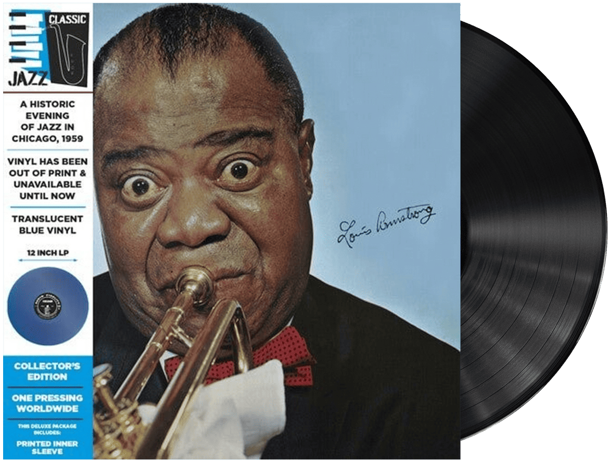

| 이름 | Louis Armstrong (루이 암스트롱) |
|---|---|
| 출생 | 1901년 8월 4일 미국 루이지애나주 뉴올리언스 |
| 사망 | 1971년7월 6일(69세) |
| 활동 시기 | 1914년~1971년 |
| 악기 | 트럼펫, 코넷, 가창 |
루이 대니얼 암스트롱(Louis Daniel Armstrong, 1901년 8월 4일 ~ 1971년 7월 6일)은 미국의 가수이자 재즈 음악가이다.
종종 트럼펫과 클라리넷을 연주하였다. 1971년 7월 6일에 심근 경색과 폐암 등의 합병증으로 사망하였다. 약 반세기에 걸쳐 연주
활동을 한 루이 암스트롱은 '새치모'(Satchmo)라는 애칭으로 불렸다.
13세 무렵부터 트럼펫(처음에는 코넷)을 배워, 1922년 시카고의 킹올리버 악단에 참가하였고 이후 많은 악단에서 연주 활동을 해왔다. 1925년 〈핫 파이브 세븐〉을 취입하고, 악단도 조직하였다. '핫 파이브'(Hot Five)의 이름으로 취입된 수십곡은 미국 재즈 사상 불멸의 명반으로 평가받는다. 재즈의 산 역사이자 증인이라 평가받는 루이 암스트롱은 1930년을 중심으로 한 몇 해 동안 절정기를 맞았다.
1932년 유럽 순회 공연을 하였으며 영국 국왕의 어전 연주를 하기도 했다. 1940년대에 작은 편성의 올스타즈를 만들었으며, 대전 후에도 세계 각지를 순회 공연하였고, 대한민국을 방문하기도 했다.
루이 암스트롱은 60세가 넘기까지 현역으로 활약하면서 영화에도 자주 출연하였다. 그는 담배를 즐겨 폈고, 와인 등의 주류도 곧잘 마셨는데 폐질환과 심근 경색 등으로 자주 고통을 받았지만, 은퇴하지 않고 계속 방송과 무대 공연에 나섰다.1971년 7월 6일 뉴욕 퀸스 자택에서 수면 도중 심장마비를 일으켜 71세의 나이로 사망하였다.
트럼펫 연주자 겸 가수였던 루이 암스트롱은 1927년 이후 스캣을 널리 보급하였다. 스캣은 타악기 리듬에 고정된 음절을 붙여 소리내는 서아프리카의 음악 관습을 그 원조로 삼고 있는 뜻이 없는 음절에 붙인 선율을 열정적으로 부르는 재즈의 즉흥 가창법이다. 일찍이 암스트롱은 가수의 흥을 돋궈주는 역할로서, 특히 블루스 가수 베시 스미스의 노래를 반주해주기 위해 리프(riff： 재즈에서 솔로에 맞추어 연주하는 즉흥적 성격의 짧은 기악 반주)를 연주했다.
그는 트럼펫 솔로의 놀라운 표현에 곁들여 소박하고 개성적인 노래도 부르는 독특한 연기력과 기교로 널리 알려졌다. 레퍼토리도 재즈에서 팝 음악에 이르기까지 폭이 넓으며, 음악 영화에도 토키 초기부터 수 없이 출연하였다. 그는 재즈 사상의 거인이며 희대의 솔리스트, 재즈 보컬리스트의 제1인자로 평가받는다.
13세 무렵부터 트럼펫(처음에는 코넷)을 배워, 1922년 시카고의 킹올리버 악단에 참가하였고 이후 많은 악단에서 연주 활동을 해왔다. 1925년 〈핫 파이브 세븐〉을 취입하고, 악단도 조직하였다. '핫 파이브'(Hot Five)의 이름으로 취입된 수십곡은 미국 재즈 사상 불멸의 명반으로 평가받는다. 재즈의 산 역사이자 증인이라 평가받는 루이 암스트롱은 1930년을 중심으로 한 몇 해 동안 절정기를 맞았다.
1932년 유럽 순회 공연을 하였으며 영국 국왕의 어전 연주를 하기도 했다. 1940년대에 작은 편성의 올스타즈를 만들었으며, 대전 후에도 세계 각지를 순회 공연하였고, 대한민국을 방문하기도 했다.
루이 암스트롱은 60세가 넘기까지 현역으로 활약하면서 영화에도 자주 출연하였다. 그는 담배를 즐겨 폈고, 와인 등의 주류도 곧잘 마셨는데 폐질환과 심근 경색 등으로 자주 고통을 받았지만, 은퇴하지 않고 계속 방송과 무대 공연에 나섰다.1971년 7월 6일 뉴욕 퀸스 자택에서 수면 도중 심장마비를 일으켜 71세의 나이로 사망하였다.
트럼펫 연주자 겸 가수였던 루이 암스트롱은 1927년 이후 스캣을 널리 보급하였다. 스캣은 타악기 리듬에 고정된 음절을 붙여 소리내는 서아프리카의 음악 관습을 그 원조로 삼고 있는 뜻이 없는 음절에 붙인 선율을 열정적으로 부르는 재즈의 즉흥 가창법이다. 일찍이 암스트롱은 가수의 흥을 돋궈주는 역할로서, 특히 블루스 가수 베시 스미스의 노래를 반주해주기 위해 리프(riff： 재즈에서 솔로에 맞추어 연주하는 즉흥적 성격의 짧은 기악 반주)를 연주했다.
그는 트럼펫 솔로의 놀라운 표현에 곁들여 소박하고 개성적인 노래도 부르는 독특한 연기력과 기교로 널리 알려졌다. 레퍼토리도 재즈에서 팝 음악에 이르기까지 폭이 넓으며, 음악 영화에도 토키 초기부터 수 없이 출연하였다. 그는 재즈 사상의 거인이며 희대의 솔리스트, 재즈 보컬리스트의 제1인자로 평가받는다.
